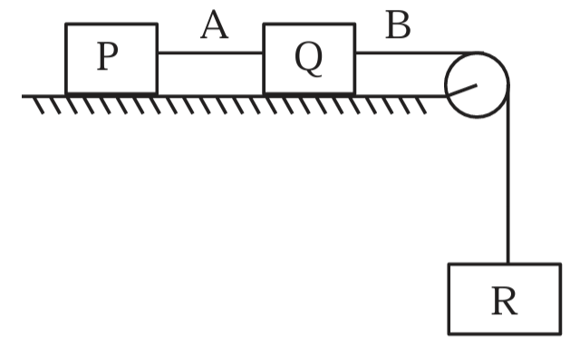
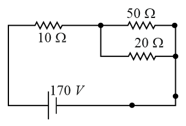

Filter questions
📌 PHY-WAVEOPTI-YDSE_INTERFERENCE
↗ Cluster set
Q1
PHY-2021-0101-S2-Q025
2021 | 01 Sep | Shift 2
—
Integer
The width of one of the two slits in a Young's double slit experiment is three times the other slit. If the amplitude of the light coming from a slit is proportional to the slit-width, the ratio of minimum to maximum intensity in the interference pattern is x: 4 where x is _______.

Answer: 1
Q2
PHY-2021-0101-S1-Q027
2021 | 16 Mar | Shift 1
—
Integer
A fringe width of 6 mm was produced for two slits separated by 1 mm apart. The screen is placed 10 m away. The wavelength of light used is x nm. The value of x to the nearest integer is ______.
Answer: 600
Q3
PHY-2021-0101-S1-Q015
2021 | 18 Mar | Shift 1
—
MCQ
In Young's double slit arrangement, slits are separated by a gap of 0.5 mm, and the screen is placed at a distance of 0.5 m from them. The distance between the first and the third bright fringe formed when the slits o are illuminated by a monochromatic light of 5890 A is:-
Answer: B
Q4
PHY-2021-0101-S1-Q017
2021 | 24 Feb | Shift 1
—
MCQ
In a Young's double slit experiment, the width of the one of the slit is three times the other slit. The amplitude of the light coming from a slit is proportional to the slit-width. Find the ratio of the maximum to the minimum intensity in the interference pattern.
Answer: D
Q5
PHY-2021-0101-S2-Q015
2021 | 24 Feb | Shift 2
—
MCQ
If the source of light used in a Young's double slit experiment is changed from red to violet:
Answer: A
Q6
PHY-2021-0101-S1-Q015
2021 | 25 Feb | Shift 1
—
MCQ
Two coherent light sources having intensity in the ratio 2x produce an interference pattern. The ratio Imax−Imin Imax+Imin will be
Answer: C
Q7
PHY-2021-0101-S1-Q014
2021 | 25 Jul | Shift 1
—
MCQ
In the Young's double slit experiment, the distance between the slits varies in time as dt= d0 + a0 sinωt; where d0, ω and a0 are constants. The difference between the largest fringe width and the smallest fringe width obtained over time is given as: 2λDd0 2λDa0
Answer: B
Q8
PHY-2021-0101-S1-Q029
2021 | 26 Aug | Shift 1
—
Integer
White light is passed through a double slit and interference is observed on a screen 1.5 m away. The separation between the slits is 0.3 mm. The first violet and red fringes are formed 2.0 mm and 3.5 mm away from the central white fringes. The difference in wavelengths of red and violet light is (in nm). 104t)
Answer: 300
Q9
PHY-2021-0101-S1-Q018
2021 | 26 Feb | Shift 1
—
MCQ
In a Young's double slit experiment two slits are separated by 2 mm and the screen is placed one meter away. When a light of wavelength 500 nm is used, the fringe separation will be:
Answer: D
Q10
PHY-2021-0101-S2-Q017
2021 | 27 Aug | Shift 2
—
MCQ
The light waves from two coherent sources have same intensity I1 = I2 = I0. In interference pattern the intensity of light at minima is zero. What will be the intensity of light at maxima?
Answer: C
Q11
PHY-2021-0101-S1-Q018
2021 | 27 Jul | Shift 1
—
MCQ
In Young's double slit experiment, if the source of light changes from orange to blue then:
Answer: B
Q12
PHY-2021-0101-S2-Q028
2021 | 31 Aug | Shift 2
—
Integer
In a Young's double slit experiment, the slits are separated by 0.3 mm and the screen is 1.5 m away from the plane of slits. Distance between fourth bright fringes on both sides of central bright fringe is 2.4 cm. 1014 The frequency of light used is x× Hz.

Answer: 5
Q13
PHY-2022-0101-S2-Q015
2022 | 25 Jun | Shift 2
—
MCQ
The interference pattern is obtained with two coherent light sources of intensity ratio 4: 1. And the ratio Imax + Imin is 5 x. Then, the value of x will be equal to: Imax - Imin
Answer: B
Q14
PHY-2022-0101-S1-Q028
2022 | 27 Jun | Shift 1
—
Integer
In Young's double slit experiment the two slits are 0.6 mm distance apart. Interference pattern is observed on a screen at a distance 80 cm from the slits. The first dark fringe is observed on the screen directly opposite to one of the slits. The wavelength of light will be _____ nm.
Answer: 450
Q15
PHY-2022-0101-S2-Q016
2022 | 28 Jun | Shift 2
—
MCQ
In young's double slit experiment performed using a monochromatic light of wavelength λ, when a glass plate (μ = 1.5) of thickness xλ is introduced in the path of the one of the interfering beams, the intensity at the position where the central maximum occurred previously remains unchanged. The value of x will be
Answer: B
Q16
PHY-2022-0101-S1-Q017
2022 | 29 Jun | Shift 1
—
MCQ
Using Young's double slit experiment, a monochromatic light of wavelength 5000Å produces fringes of fringe width 0.5 mm. If another monochromatic light of wavelength 6000Å is used and the separation between the slits is doubled, then the new fringe width will be
Answer: D
Q17
PHY-2022-0101-S2-Q027
2022 | 29 Jun | Shift 2
—
Integer
In a double slit experiment with monochromatic light, fringes are obtained on a screen placed at some distance from the plane of slits. If the screen is moved by 10−2 towards the slits, the change in fringe width is 5 × m 3 × 10−3 cm. If the distance between the slits is 1 mm, then the wavelength of the light will be____ nm.

Answer: 600
Q18
PHY-2023-0101-S2-Q027
2023 | 06 Apr | Shift 2
—
Integer
A beam of light consisting of two wavelengths 7000 A and 5500 A is used to obtain interference pattern in Young's double slit experiment. The distance between the slits is 2.5 mm and the distance between the plane of slits and the screen is 150 cm. The least distance from the central fringe, where the bright fringes due to both the wavelengths coincide, is n × 10–5 m. The value of n is _____.
Answer: 20
Q19
PHY-2023-0101-S2-Q015
2023 | 10 Apr | Shift 2
—
MCQ
The ratio of intensities at two points P and Q on the screen in a Young's double slit experiment where phase π π difference between two waves of same amplitude are and 2, respectively are
Answer: D
Q20
PHY-2023-0101-S2-Q017
2023 | 13 Apr | Shift 2
—
MCQ
In a Young’s double slit experiment, the ratio of amplitude of light coming from slits is 2: 1. The ratio of the maximum to minimum intensity in the interference pattern is
Answer: D
Q21
PHY-2023-0101-S1-Q025
2023 | 25 Jan | Shift 1
—
Integer
In 5th Young's double slits experiment, the position of bright fringe from the central maximum is 5 cm. The distance between slits and screen is 1 m and wavelength of used monochromatic light is 600 nm. The separation between the slits is: (1) μm (2) μm 60 48 (3) 12 μm (4) 36 μm
Answer: 18
Q22
PHY-2023-0101-S2-Q025
2023 | 31 Jan | Shift 2
—
Integer
Two light waves of wavelengths 800 and 600 nm are used in Young's double slit experiment to obtain interference fringes on a screen placed 7 m away from plane of slits. If the two slits are separated by 0.35 mm, then shortest distance from the central bright maximum to the point where the bright fringes of the two wavelength coincide will be ______ mm.
Answer: 20
Q23
PHY-2024-0101-S2-Q029
2024 | 01 Feb | Shift 2
—
Integer
In Young's double slit experiment, monochromatic light of wavelength 5000 A ∘ is used. The slits are 1.0 mm apart and screen is placed at 1.0 m away from slits. The distance from the centre of the screen where intensity becomes half of the maximum intensity for the first time is ______ 10−6 × m.
Answer: 125
Q24
PHY-2024-0101-S1-Q029
2024 | 04 Apr | Shift 1
—
Integer
Two wavelengths λ1 and λ2 are used in Young's double slit experiment. λ1 = 450 nm and λ2 = 650 nm. The minimum order of fringe produced by λ2 which overlaps with the fringe produced by λ1 is n. The value of n is _____.
Answer: 9
Q25
PHY-2024-0101-S2-Q016
2024 | 04 Apr | Shift 2
—
MCQ
The width of one of the two slits in a Young's double slit experiment is 4 times that of the other slit. The ratio of the maximum of the minimum intensity in the interference pattern is:
Answer: C
Q26
PHY-2024-0101-S1-Q029
2024 | 05 Apr | Shift 1
—
Integer
In Young's double slit experiment, carried out with light of wavelength 5000\AA, the distance between the slits is 0.3 mm and the screen is at 200 cm from the slits. The central maximum is at x = 0 cm. The value of x for third maxima is _____ mm.
Answer: 10
Q27
PHY-2024-0101-S2-Q029
2024 | 06 Apr | Shift 2
—
Integer
Two coherent monochromatic light beams of intensities I and 4I are superimposed. The difference between maximum and minimum possible intensities in the resulting beam is xI. The value of x is $_________.
Answer: 8
Q28
PHY-2024-0101-S1-Q029
2024 | 09 Apr | Shift 1
—
Integer
In a Young's double slit experiment, the intensity at a point is ( 1 )th of the maximum intensity, the minimum 4 distance of the point from the central maximum is ________ μm. (Given: λ = 600 nm, d = 1.0 mm, D = 1.0 m )
Answer: 200
Q29
PHY-2024-0101-S2-Q030
2024 | 09 Apr | Shift 2
—
Integer
Monochromatic light of wavelength 500 nm is used in Young's double slit experiment. An interference pattern is obtained on a screen. When one of the slits is covered with a very thin glass plate (refractive index = 1.5 ), the central maximum is shifted to a position previously occupied by the 4th bright fringe. The thickness of the glass-plate is ______ μm.
Answer: 4
Q30
PHY-2024-0101-S2-Q017
2024 | 29 Jan | Shift 2
—
MCQ
In Young's double slit experiment, light from two identical sources are superimposing on a screen. The path difference between the two lights reaching at a point on the screen is 7λ 4. The ratio of intensity of fringe at this point with respect to the maximum intensity of the fringe is:
Answer: A
Q31
PHY-2024-0101-S1-Q029
2024 | 31 Jan | Shift 1
—
Integer
Two waves of intensity ratio 1: 9 cross each other at a point. The resultant intensities at the point, when (a) 60o. I1 10 Waves are incoherent is I1 b Waves are coherent is I2 and differ in phase by If I2 = x, then x= _________.

Answer: 13
📌 PHY-WAVEOPTI-DIFFRACTION_SINGLE_SLIT
↗ Cluster set
Q32
PHY-2021-0101-S2-Q014
2021 | 25 Feb | Shift 2
—
MCQ
Consider the diffraction pattern obtained from the sunlight incident on a pinhole of diameter 0.1 μm. If the diameter of the pinhole is slightly increased, it will affect the diffraction pattern such that
Answer: C
Q33
PHY-2022-0101-S1-Q028
2022 | 24 Jun | Shift 1
—
Integer
Sodium light of wavelengths 650 nm and 655 nm is used to study diffraction at a single slit of aperture 0.5 mm. The distance between the slit and the screen is 2.0 m. The separation between the positions of the ×10−5 first maxima of diffraction pattern obtained in the two cases is _____ m
Answer: 3
Q34
PHY-2022-0101-S1-Q017
2022 | 25 Jun | Shift 1
—
MCQ
Given below are two statements: Statement I: Davisson-Germer experiment establishes the wave nature of electrons. Statement II: If electrons have wave nature, they can interfere and show diffraction. In the light of the above statements choose the correct answer from the option given below:
Answer: A
Q35
PHY-2023-0101-S1-Q016
2023 | 31 Jan | Shift 1
—
MCQ
Given below are two statements: One is labelled as Assertion A and the other is labelled as Reason R Assertion A: The beam of electrons shows wave nature and exhibit interference and diffraction. Reason R: Davisson Germer Experimentally verified the wave nature of electrons. In the light of the above statements. Choose the most appropriate answer from the options given below:
Answer: D
Q36
PHY-2024-0101-S2-Q017
2024 | 01 Feb | Shift 2
—
MCQ
A microwave of wavelength 2.0 cm falls normally on a slit of width 4.0 cm. The angular spread of the central maxima of the diffraction pattern obtained on a screen away from the slit, will be: 1.5 m
Answer: C
Q37
PHY-2024-0101-S1-Q017
2024 | 06 Apr | Shift 1
—
MCQ
Which of the following phenomena does not explain by wave nature of light. A. reflection B. diffraction C. photoelectric effect D. interference E. polarization Choose the most appropriate answer from the options given below:
Answer: C
Q38
PHY-2024-0101-S2-Q029
2024 | 29 Jan | Shift 2
—
Integer
In a single slit diffraction pattern, a light of wavelength 6000 A o is used. The distance between the first and third minima in the diffraction pattern is found to be 3 mm when the screen is placed 50 cm away from slits. ×10−4 The width of the slit is ____ m.
Answer: 2
📌 PHY-WAVEOPTI-POLARIZATION_BREWSTER
Q39
PHY-2021-0101-S1-Q028
2021 | 24 Feb | Shift 1
—
Integer
An unpolarized light beam is incident on the polarizer of a polarization experiment and the intensity of light beam emerging from the analyzer is measured as Lumens. Now, if the analyzer is rotated around the 100 horizontal axis (direction of light) by 30° in clockwise direction, the intensity of emerging light will be _______Lumens.

Answer: 75